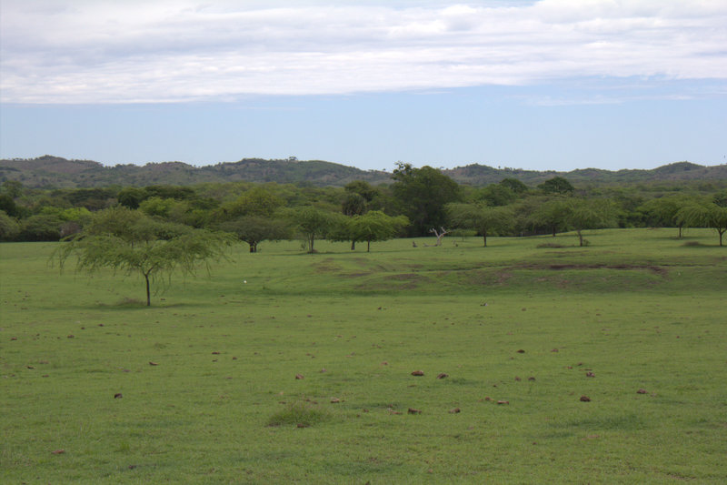
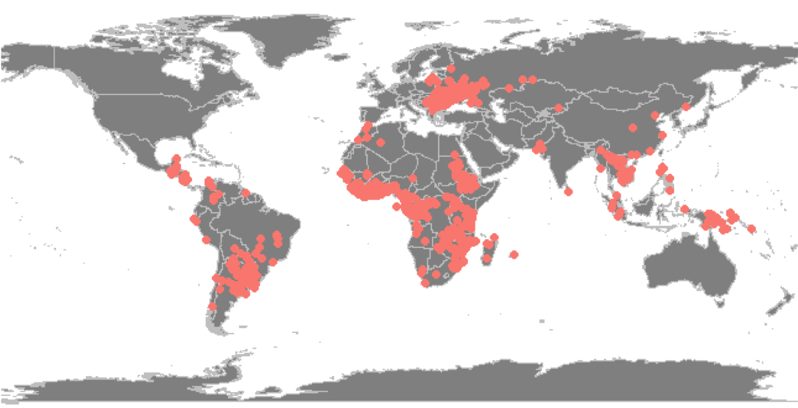
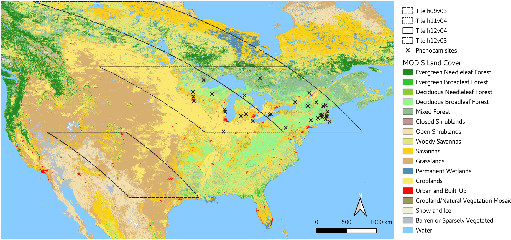

Research
Sensitivity of global pasturelands to climate variation
Pasturelands are an important and understudied part of the global agricultural system. While many studies have focused on the productivity and resiliency of croplands, there is an urgent need to improve our understanding of how global pasturelands will be affected under the combined pressures of a changing climate and increasing population in the coming decades. To address this knowledge gap, the main goal of my research is to develop an observation and modeling framework that exploits remote sensing, meteorological datasets, and land cover information to improve our capability to both monitor and manage the long-term sustainability of this globally extensive and societally critical land use. We are creating an empirical model that quantifies the spatially explicit sensitivity of global pasturelands to short-term climate variations.


Remote sensing of foreign land acquisitions
The increasing worldwide demand for food, feed, fiber and fuel, driven by a growing world population and higher disposable per capita income, has led to expansion of agricultural production. One strategy to address this global challenge of increasing demand is to increase the number of foreign direct investments (FDI) in land (Foreign Land Acquisition; short: FLA). Acquisitions of agricultural land are currently reported by non-governmental initiatives such as the Land Matrix Global Observatory. We test two hypothesis: 1) Land and water endowments of a host country are positively correlated with acquistion of agricultural land and 2) Investors are attracted to low agricultural productivity but high potential for productivity and low land prices.

Comparison between the two most widely used phenology products
Observations of vegetation phenology at regional-to-global scales provide important information about the terrestrial carbon cycle and seasonal energy fluxes between the biosphere and the atmosphere across ecosystems and climate regimes. High temporal frequency satellite instruments such as NASA’s Moderate Resolution Imaging Spectroradiometer (MODIS) provide consistent measurements and are excellent platforms for regional studies of land surface phenology. Our study provides a comprehensive intercomparison and interpretation of start-of-season (SOS) and end-of- season (EOS) phenology derived from MODIS enhanced vegetation index (EVI) time series processed using TIMESAT and the MODIS Land Cover Dynamics Product (MCD12Q2).
